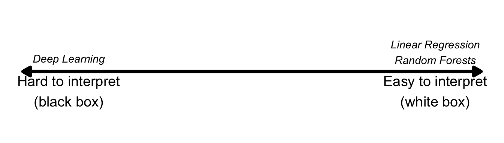
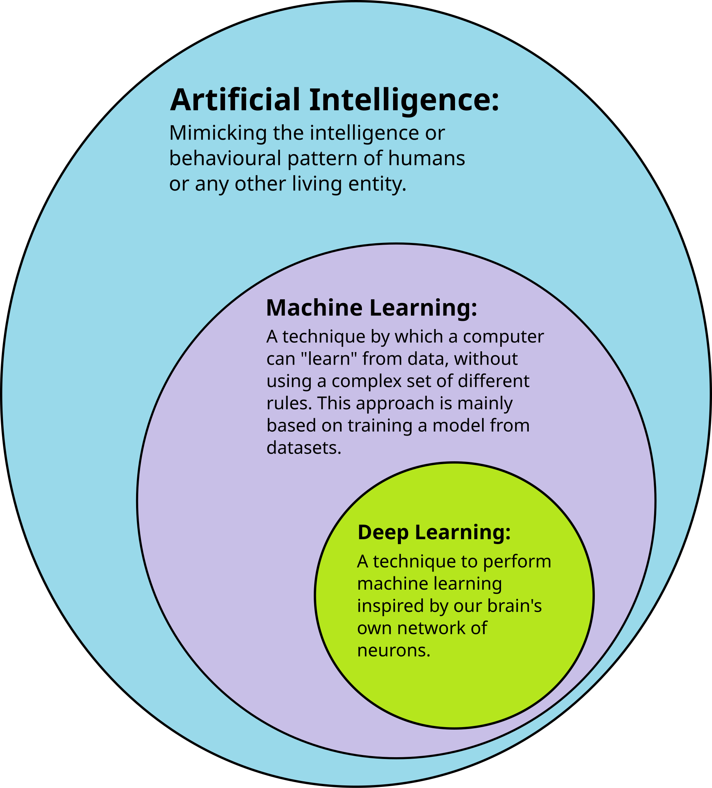
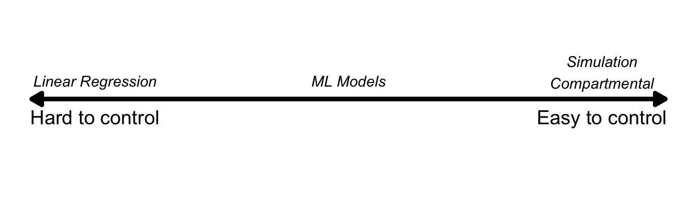
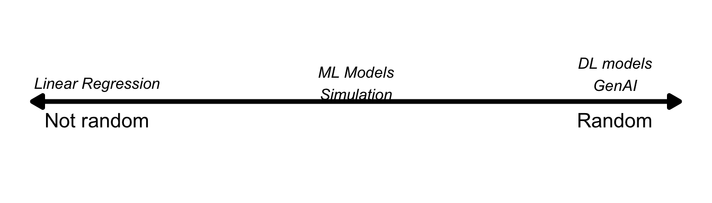

I have been reading a bit more about deep learning recently (future post to come), and was trying to connect it to the bigger picture of how we use computers to learn insights from data.
Generally speaking, deep learning is a special type of machine learning, which is itself a special type of AI (artificial intelligence). Confusingly, when most people talk about AI, they are referring to generative AI and large language models, which are really special types of deep learning models (so they would be the furthest inside the circles below):

Then there is statistics, the original tool for learning from data. There are all kinds of statistical tests out there which I won’t get into, but they all mostly boil down to some form of linear or logistic regression. These are usually considered the simplest level machine learning models. When I first learned about neural networks (a type of deep learning), I was surprised to find out that a single layer neural network has exactly the same structure as a linear regression. So statistics and deep learning are even more connected than they initially seem.
Another type of learning from data that I have spent a lot of time on is simulation models. Most statisticians have done at least some of this with Monte Carlo simulation. You set up your scenario (say, how likely is it that you will be dealt a pair of aces in Blackjack with 3 other players), and you randomly draw numbers over and over to see what happens. The more complicated version of this would be something like system dynamics modeling, which tries to create a picture of complex real-world systems with all of their feedback loops and nonlinear dynamics. This includes compartmental infectious disease modeling, but then there are also agent-based and network models, which add further structure onto the dynamics.
To bring it back full circle, people are not connecting these structured models to deep learning models, to create “physics-informed neural networks.” I don’t know much about this topic (yet) but it is really interesting.
As Box said, all models are wrong but some are useful. Which model you use depends a lot on what you are trying to do. [add quote]
Black and white boxes
One way of zooming out and categorizing these models is by determining which are black boxes and which are ‘white’ or ‘clear’ boxes.
A black box model is one where we can see the inputs and the outputs, but where the intermediate steps are too hard to see or understand. The data goes into the black box and comes out the other side, and we can’t understand anything in between.
I say ‘understand’ because we actually can see it most of the time. Even for deep learning models and large language models, we can technically extract the values of all the neurons at any given step. But they are considered uninterpretable, at least to human eyes. (welch labs videos on grokking and alexnet).
A white box model would be the opposite. In something like linear regression, we can see and understand what is happening at every single step.
There are two other spectrums like this that I want to propose.
The first is controlability. Here, linear regression models would be on one end, with no controllability. The data you put in determine the model you get out. Most machine learning models would be somewhere in the middle. You might be able to control the structure or parameters to some extent, but your limited by the interpretability problem. So you’re still at the whim of the data you put in.
On the other end of the spectrum of controllability are simulation models and compartmental models. With these, you can exactly program what all the input ‘data’ should be, and exactly what the model structure should be. Those things together govern what data you’re going to get out. There is still complexity and randomness, so you can’t be exactly sure what your output will be, but you can always change it.

The second spectrum is randomness. Again, linear regression is at one end: totally not random; only governed by the input data. Some compartmental models are also like this. In the middle would be some machine learning models and simulation models, which may have some randomness but usually converge to the same solution every time.
(discuss how random differs from unpredictable. A model could be not very random, but still very unpredictable (e.g. compartmental models). And a model that is random could also be quite predictable (e.g. simulation models)).
at the far end of the randomness spectrum would be deep learning models. With deep learning, you input massive amounts of data and specify some structure, but there’s no telling where the training process will land. With generative AI, the models explicitly have a ‘temperature’ setting to enforce randomness in the predictions too, which apparently produces more realistic and better responses.

Coda: Borges
Two quotes from the author Jorge Luis Borges to close this out:
“A man sets out to draw the world. As the years go by, he peoples a space with images of provinces, kingdoms, mountains, bays, ships, islands, fishes, rooms, instruments, stars, horses, and individuals. A short time before he dies, he discovers that the patient labyrinth of lines traces the lineaments of his own face.” https://www.goodreads.com/quotes/4490-a-man-sets-out-to-draw-the-world-as-the
And the short story, On Exactitude in science:
…In that Empire, the Art of Cartography attained such Perfection that the map of a single Province occupied the entirety of a City, and the map of the Empire, the entirety of a Province. In time, those Unconscionable Maps no longer satisfied, and the Cartographers Guilds struck a Map of the Empire whose size was that of the Empire, and which coincided point for point with it. The following Generations, who were not so fond of the Study of Cartography as their Forebears had been, saw that that vast Map was Useless, and not without some Pitilessness was it, that they delivered it up to the Inclemencies of Sun and Winters. In the Deserts of the West, still today, there are Tattered Ruins of that Map, inhabited by Animals and Beggars; in all the Land there is no other Relic of the Disciplines of Geography.
https://kwarc.info/teaching/TDM/Borges.pdf